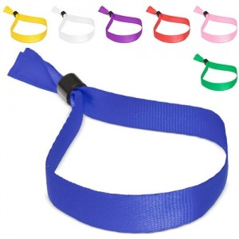

Em resumo
Ideias para iniciativas culturais e desportivas, feiras locais, informação pública e receção de visitantes. As famílias apresentadas são possibilidades a avaliar, não artigos obrigatórios.
Contexto em imagens

Destinatários e necessidades
Participantes e famílias
Podem precisar de informação clara sobre a iniciativa e de uma forma simples de a levar consigo.
Voluntários e equipas organizadoras
Podem beneficiar de identificação funcional e de uma distribuição coordenada com as tarefas do evento.
Visitantes
Considere a língua, o contexto local e a facilidade de transporte, sem presumir as necessidades de cada pessoa.
Ocasiões, locais e épocas
Atividade cultural, desportiva ou familiar
A ocasião destina-se a participantes e a famílias e pode decorrer em contextos como biblioteca, equipamento cultural, espaço público ou recinto desportivo. O momento — datas e programação dependem do município e da iniciativa; confirme a agenda local — ajuda a enquadrar o objetivo de apoiar a participação ou disponibilizar informação relevante para a atividade.
Feira local ou receção de visitantes
A ocasião destina-se a visitantes, a expositores e à organização e pode decorrer em contextos como recinto da feira, posto de receção ou espaço municipal. O momento — calendário definido localmente e sujeito a atualização — ajuda a enquadrar o objetivo de orientar a participação e distinguir os materiais destinados a cada público.
Ação de informação ou reconhecimento
A ocasião destina-se a voluntários e a equipas organizadoras e pode decorrer em contextos como ponto de encontro, balcão de acolhimento ou local da ação. O momento — conforme o calendário e as prioridades de cada iniciativa — ajuda a enquadrar o objetivo de facilitar identificação, distribuição ou reconhecimento, conforme o objetivo escolhido.
Famílias de artigos a avaliar
Participantes e famílias
Objetivo
Participação e informação
Famílias a avaliar
Material de escrita, Sacos para
documentos, Artigos para atividades
Voluntários e organização
Objetivo
Identificação e coordenação
Famílias a avaliar
Têxteis identificativos, Artigos de
identificação, Material de apoio à equipa
Visitantes
Objetivo
Receção e informação local
Famílias a avaliar
Mapas ou material informativo, Sacos,
Artigos de hidratação
Utilização e distribuição
- Separe materiais para participantes, voluntários e equipas organizadoras; a oferta ou identificação destinada a um grupo não deve ser presumida para os restantes.
- Defina um ponto de entrega, uma pessoa responsável e uma forma de gerir sobras ou entregas tardias.
- Nas festas e feiras locais, confirme datas, locais, acessos e programação junto da entidade organizadora: variam por município e por ano.
O que confirmar antes de escolher
- Qual é o objetivo público da iniciativa e quem é responsável pela distribuição?
- A mensagem é legível e adequada ao espaço, ao idioma e ao público previsto?
- Há variantes por equipa, atividade ou local que devam ser separadas?
- Como serão armazenados e transportados os materiais até ao ponto de entrega?
- As famílias indicadas são ideias para avaliar, não uma especificação nem uma recomendação institucional.
Perguntas frequentes
As festas locais têm datas iguais em todos os municípios?
Não. Consulte o programa atualizado da câmara ou da entidade organizadora do local e do ano em causa.
Devo preparar a mesma oferta para participantes e voluntários?
Não é obrigatório. Identifique necessidades e funções de cada grupo e decida separadamente se uma oferta ou material de apoio é pertinente.